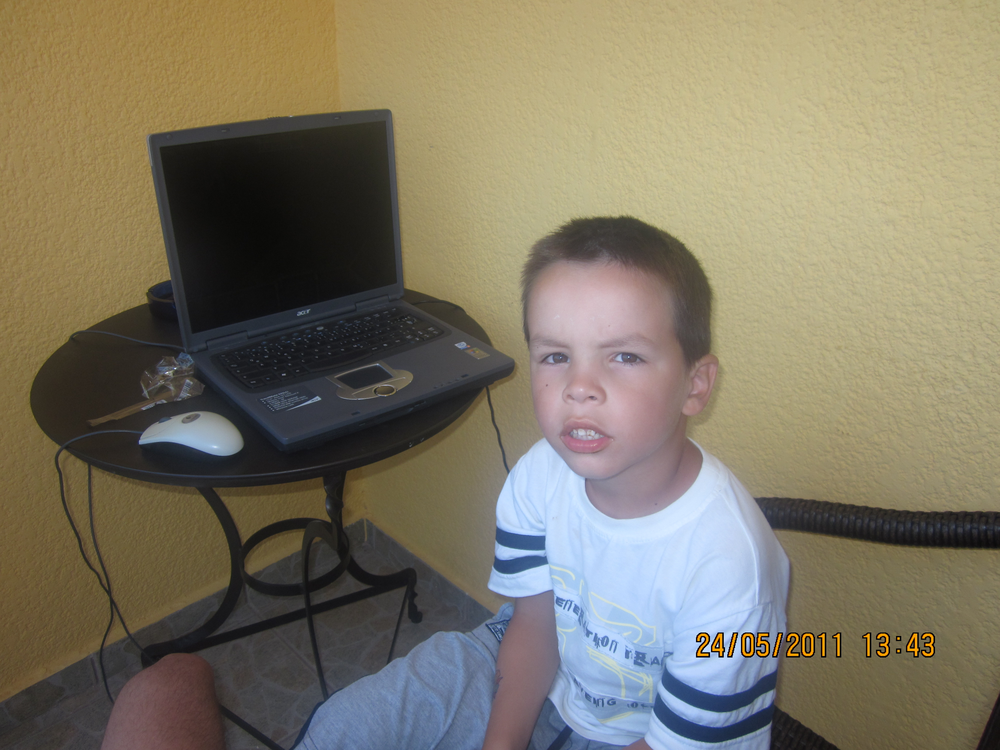

O meni
Zovem se Kosta Čolović i dolazim iz Beograda. Još od najranijeg detinjstva fasciniran sam računarima, tehnologijom i prirodnim naukama, što me je navelo da veoma rano počnem da eksperimentišem sa elektronikom, programiranjem i sklapanjem računara.
Tokom osnovne škole isticao sam se na takmičenjima iz matematike, fizike i biologije, a zahvaljujući kontinuiranim rezultatima bio sam proglašen učenikom generacije, sa prosekom 5.0 tokom celog školovanja.
Pohađao sam Matematičku gimnaziju, okružen ambicioznim vršnjacima i zahtevnim programom koji je dodatno produbio moj interes za nauku i tehnologiju. U tom periodu sam radio na različitim projektima — od programiranja i pravljenja igara, do elektronike i etičkog hakovanja. Oduvek me je privlačilo razumevanje kako stvari funkcionišu na najdubljem nivou, bilo da se radi o algoritmima, prirodnim zakonima, astrofizičkim fenomenima ili strukturi računarskih sistema.
Danas sam student Matematičkog fakulteta Univerziteta u Beogradu, na smeru Informatika, gde nastavljam da razvijam znanje iz programiranja, algoritama, hardvera, operativnih sistema i matematike. Posebno me interesuju oblasti veštačke inteligencije, mašinskog učenja, dubokih neuronskih mreža i primena AI-ja u astrofizici i analizi podataka. Tokom godina sam popravio veliki broj računara za učenike, profesore i privatne klijente. Van informatike, interesuju me prirodne nauke, filozofija i književnost.
Moja najveća motivacija je konstantno učenje i stvaranje. Uvek tražim nove izazove, nova znanja i projekte koji me guraju napred — jer verujem da se najbolje ideje rađaju tamo gde se spajaju radoznalost, upornost i ljubav prema onome što radiš.

| Hobi | Opis |
|---|---|
| Matematika | Moja najveća strast od malih nogu; uživam u rešavanju logičkih problema i istraživanju elegancije dokaza. |
| Informatika | Fokusiran na programiranje, mašinsko učenje i teorijsko računarstvo kao alat za rešavanje kompleksnih problema. |
| Fizika | Fascinacija zakonima prirode, od mehanike do moderne fizike, i njihovom matematičkom formulacijom. |
| Filozofija | Proučavanje različitih škola mišljenja i preispitivanje etičkih i egzistencijalnih pitanja kroz kritičku analizu. |
| Astronomija | Istraživanje svemira i kosmičkih fenomena, uz poseban interes za astrofiziku i kretanje nebeskih tela. |
| Čitanje | Od klasika svetske književnosti do filozofskih eseja i naučno-popularnih dela koja proširuju vidike. |
| Filmovi | Posebno me interesuje kinematografija sa dubokom porukom, vizuelna naracija i rad majstora režije. |
| Crtanje | Kreativni ventil kroz koji razvijam preciznost i vizuelno razmišljanje. |
| Gitara | Volim da sviram rok, metal i bluz klasike, kao i da smišljam originalne melodije. |
| Kuvanje | Eksperimentisanje u kuhinji kao spoj hemije i umetnosti, uz stalno isprobavanje novih recepata i tehnika. |